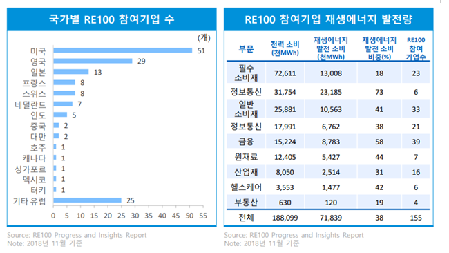

MIT Technology Review
<탈탄소화>
5. 글로벌 기업의 탄소중립 대응

최근에는 이윤 추구를 우선하던 기업들도 세계적인 탈탄소화 기조에 발맞추어 탄소중립 목표를 선언하거나 자체적인 대응책을 수립하고 있다. 글로벌 대기업들은 탈탄소화가 국제적 이슈가 되기 이전부터 선제적으로 탄소중립을 선언하거나 대응책을 실행해 왔으며, 이들을 필두로 점차 전 산업, 다양한 규모의 기업에서 탈탄소화에 동참하는 비율이 높아질 것으로 예상된다. 이러한 글로벌 기업의 대응 정책은 국가 정책에도 영향을 미치는데, 소니(Sony)의 경우 고객사의 재생에너지 전환 목표에 부응하기 위해 일본 정부의 미진한 탈탄소화 정책에 개선을 요구하기도 하였다.
1. 기술 • 전자
구글 : 2030년 넷제로 달성 선언, 2017년부터 연간 전력 소비의 100%를 재생에너지로 충당, 2030년까지 전세계 데이터센터와 구글캠퍼스를 포함한 모든 생산설비와 사업부문을 무탄소 에너지로 운영할 계획
애플 : 2030년 넷제로 달성 선언, 10개년 기후변화 로드맵을 발표하고 저탄소 제품 디자인, 에너지 효율 향상, 재생에너지, 공정 및 소재 혁신, 탄소 제거 추진 예정
소니 : 2050년까지 제조 과정 내 탄소배출량 제로 목표로 함, 애플, 페이스북 등 고객사의 재생에너지 전환 노력에 부합하기 위해 일본 정부에 재생에너지 대책을 요구하였으며 정부의 대책이 마련되지 않을 경우 제조 설비를 해외로 이전해야 할 수도 있다고 주장
2. 소비재
유니레버 : 2038년까지 넷제로 달성 및 벌목 없는 공급망 구축 목표
네슬레 : 2050년 넷제로 달성 선언, 블록체인 기술을 적용한 공급망 개선으로 2050년까지 탄소배출 제로 달성 목표
1. 에너지/석유화학
오스테드 : 2008년에 선제적으로 재생에너지 전환 목표를 선언, 2023년까지 석탄 사용을 중단하고 2025년에너는 거의 100%에 달하는 에너지를 그린에너지원에서 생산할 수 있을 것으로 추산, 지난 10년 동안 재생에너지 부문에 1,930억 크로네를 투자, 2019년 말 기준 그린에너지 비중을 86% 달성
브리티시페트 롤리엄 : 2050년 넷제로 달성 선언, 2030년까지는 석유 및 천연가스 생산량 40% 감축하고 재생에너지 발전용량을 약 50GW 규모로 도입 목표
에니 : 2050년까지 탄소 순배출량 80% 감축 선언, 2035년까지 제품 생산 전 과정에서 탄소배출량을 30% 감축하겠다는 중간 목표치를 발표하여 진정성 있는 탄소배출전략수립 기업에 선정
구찌 : 2019년 말, 공급망과 운영 측면에서 100% 탄소중립을 달성했다고 발표함, EP&L (환경손익분선)을 활용한 측정 및 모니터링
4. 자산운용/연기금
블랙록 : 2020년 ‘기후리스크가 투자리스크’임을 선언, 수익의 25% 이상이 석탄에서 발생하는 기업에 대한 직접 투자를 중단하겠다고 발표
바클레이스 : 파리기후협약에 협력하지 않는 기업들에게 자금 대출 및 자원을 중단하도록 요구하는 결의안을 채택
노르웨이 국부펀드 : 탄소배출량이 많은 기업을 블랙리스트에 포함하여 투자대상에서 제외
참고문헌